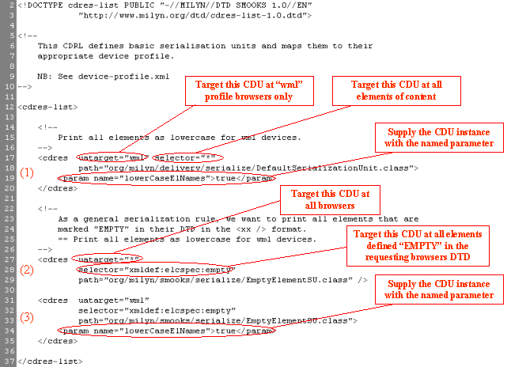
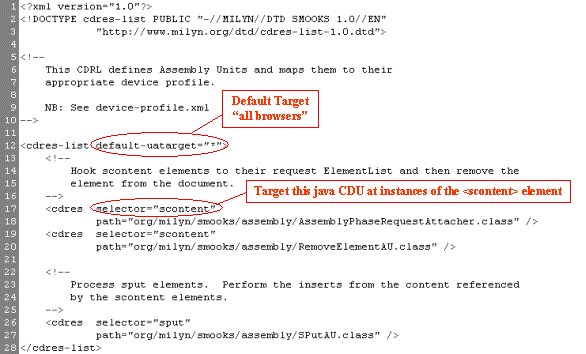

Archive Definition File Structure
See the CDRDef class Javadoc.
Content Delivery Unit Selection
See the CDRDef class Javadoc.
.cdrar Files
.cdrar files are a Jar format file used to bundle Content Delivery Units/Resources and .cdrl files (optional).
While Content Delivery Resources can be loaded in the standard way from the classpath, it is thought that
this may be a cleaner way to deliver resources in a production environment.
The following illustration shows the internal structure of a sample .cdrar file.
Sample Configurations
The following are sample .cdrl files from the CNN.com sample.
Sample 1 - serialise-basic.cdrl
This .cdrl file targets some Serialization Units.

From this image you can see there are 3 CDRDef.html">CDRDefs defined in this archive.
It might occur to you that all 3 definitions are applicable to EMPTY elements on "wml" profile browsers.
To see how the correct Serialisation Unit is selected, see the section on
Content Delivery Unit Selection.
Sample 2 - assembly.cdrl
It targets a number of Assembly Units at some custom sample tags created to pull/scrape
content from the CNN.com homepage source.
